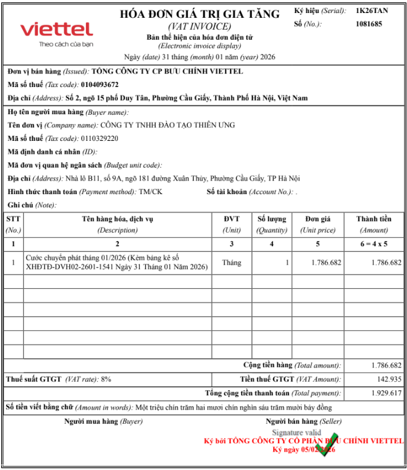
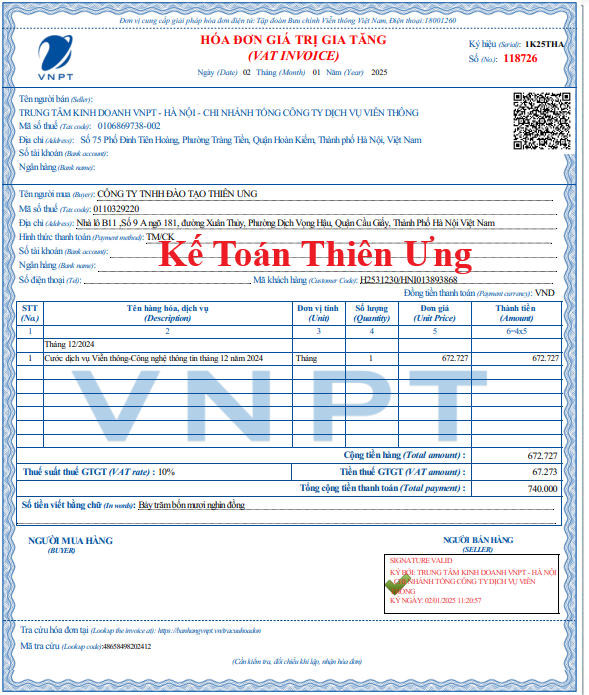
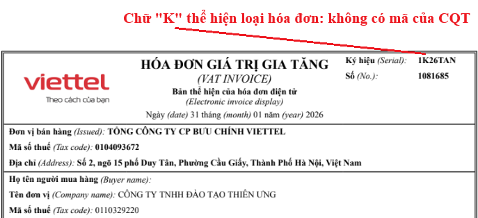

Hóa đơn điện tử không có mã của cơ quan thuế là hóa đơn điện tử do tổ chức bán hàng hóa, cung cấp dịch vụ gửi cho người mua không có mã của cơ quan thuế.
1. Mẫu hóa đơn điện tử không có mã của cơ quan thuế mới nhất năm 2026

Mẫu hóa đơn điện tử không có mã của cơ quan thuế năm 2025

Công ty đào tạo Kế Toán Diệu Tâm mời các bạn tham khảo thêm:
2. Cách nhận biết hóa đơn điện tử không có mã của cơ quan thuế
Theo điều 5 của Thông tư 32/2025/TT-BTC hướng dẫn thực hiện một số điều của Nghị định 70/2025/NĐ-CP thì:
Điều 5. Ký hiệu mẫu số, ký hiệu hóa đơn, tên liên hóa đơn
1. Hóa đơn điện tử
b) Ký hiệu hóa đơn điện tử là nhóm 6 ký tự gồm cả chữ viết và chữ số thể hiện ký hiệu hóa đơn điện tử để phản ánh các thông tin về loại hóa đơn điện tử có mã của cơ quan thuế hoặc hóa đơn điện tử không có mã, năm lập hóa đơn, loại hóa đơn điện tử được sử dụng. Sáu (06) ký tự này được quy định như sau:
- Ký tự đầu tiên là một (01) chữ cái được quy định là C hoặc K như sau: C thể hiện hóa đơn điện tử có mã của cơ quan thuế, K thể hiện hóa đơn điện tử không có mã;
=> Vậy là: Nếu như trong "Ký hiệu hóa đơn" trên hóa đơn điện tử có Ký tự đầu tiên là chữ K thì đó là hóa đơn điện tử không có mã của cơ quan thuế

3. Lập hóa đơn điện tử không có mã của cơ quan thuế
Theo điều 18 của Nghị định 123/2020/NĐ-CP quy định về hoá đơn điện tử thì:
3.1. Doanh nghiệp, tổ chức kinh tế được sử dụng hóa đơn điện tử không có mã của cơ quan thuế khi bán hàng hóa, cung cấp dịch vụ sau khi nhận được thông báo chấp nhận của cơ quan thuế.
3.2. Doanh nghiệp, tổ chức kinh tế sử dụng phần mềm để lập hóa đơn điện tử khi bán hàng hóa, cung cấp dịch vụ, ký số trên hóa đơn điện tử và gửi cho người mua bằng phương thức điện tử theo thỏa thuận giữa người bán và người mua, đảm bảo phù hợp với quy định của pháp luật về giao dịch điện tử.
Vậy là: Đối với các doanh nghiệp sử dụng hóa đơn điện tử không có mã của CQT thì khi xuất hóa đơn sẽ thực hiện như sau:
Bước 1: Lập hóa đơn
Bước 2: Ký số
Bước 3: Gửi cho người mua
Công ty đào tạo Kế Toán Diệu Tâm mời các bạn tham khảo thêm: